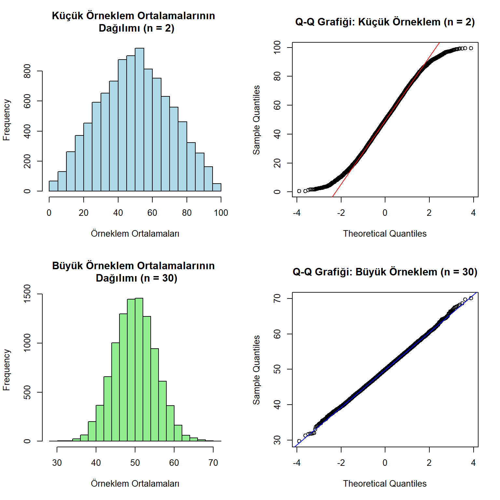

pnorm(0)[1] 0.5pnorm()[1] -1.959964 1.959964[1] -2.58 2.58qnorm()rnorm()dbinom()Bu deneyde, her X = k değeri için olasılık Binom Dağılımı kullanılarak hesaplanır:
\[P(X = k) = \binom{n}{k} \cdot p^k \cdot (1-p)^{n-k}\]
Burada: - n = 2: Deneme sayısı,
k : Başarı sayısı,
p = 0.5 : Başarı olasılığı.
Aşağıda her bir k için olasılık hesaplamaları gösterilmiştir:
\[ P(X = 0) = \binom{2}{0} \cdot 0.5^0 \cdot 0.5^2 = 1 \cdot 1 \cdot 0.25 = 0.25 \] \[ P(X = 1) = \binom{2}{1} \cdot 0.5^1 \cdot 0.5^1 = 2 \cdot 0.5 \cdot 0.5 = 0.5 \]
\[ P(X = 2) = \binom{2}{2} \cdot 0.5^2 \cdot 0.5^0 = 1 \cdot 0.25 \cdot 1 = 0.25 \]
Aşağıdaki R kodu, olasılıkları görselleştirmek için bir çubuk grafik oluşturur:
Bozuk parayı iki kez attığınızda olasılık dağılımı:
Deney, birbirinden bağımsız ve iki olasılık durumuna (başarı ya da başarısızlık) sahip denemeler içeriyor. 𝑛=30 𝑝= 0.5
p=0.5: Her bir denemenin başarı olasılığı (örneğin, yazı gelmesi). Bu, bir madeni parayı 30 kez havaya atmak gibi ideal bir durum için geçerlidir; ama sadece madeni para atmayı değil, aşağıdaki gibi başka durumları da temsil edebilir:
Hastaların iyileşme olasılığı: 30 hasta üzerinde yapılan bir deneyde her hastanın iyileşme olasılığı %50 ise, kaçının iyileşebileceğini modellemek.
Doğru cevap verme olasılığı: Bir sınavda rastgele şık seçen bir öğrencinin doğru p=0.5 olduğunda, 30 soruda kaç doğru yapabileceği.
Başarıyı ölçen diğer deneyler: Örneğin, 30 müşteriden kaçının bir ürünü satın almayı tercih edeceği, başarı olasılığının olduğu bir durum.
IQ gibi gerçek hayat verilerinde normal dağılımın kullanımı:
IQ <- seq(55, 145, 0.1)
plot(IQ, dnorm(IQ, mean = 100, sd = 15), type = "l")
abline(v = 100, col = "red")Örneklem büyüklüğü arttıkça dağılımın nasıl daraldığını inceleyelim.
Seçkisiz bir örneklem için hesaplanmış bir istatistik aslında bir değişkendir ve belli bir dağılıma sahiptir. Örnekleme dağılım konusunu açıklamak için en çok kullanılan istatistik aritmetik ortalamadır.
Merkezi Limit Teoremi’ne göre, basit seçkisiz örneklem kullanıldığında değişkenin evrende gösterdiği dağılımdan bağımsız olarak, o değişkene ait örneklem ortalamalarının dağılımı yaklaşık olarak normaldir.
Bu bölümde, örnekleme dağılımlarının histogramını ve Q-Q grafiğini çizeceğiz. Q-Q grafiği, kuramsal normal dağılım değerleri ile gerçek değerler arasındaki ilişkiyi gösterir. Oluşan doğrunun eğimi 45 dereceye yaklaştığında normal dağılıma yakınlık artar.
#| code-fold: false
nreps <- 10000
nsmall <- 2
nlarge <- 30
sampdist.mean.small <- numeric(nreps)
sampdist.mean.large <- numeric(nreps)
# Küçük örneklem büyüklüğü için
par(mfrow = c(2,2))
for (i in 1:nreps) {
sample <- runif(nsmall, 0, 100)
sampdist.mean.small[i] <- mean(sample)
}
# Histogram çizme
hist(sampdist.mean.small,
main = "Küçük Örneklem Ortalamalarının Dağılımı (n = 2)",
xlab = "Örneklem Ortalamaları",
col = "lightblue")
# Q-Q grafiği
qqnorm(sampdist.mean.small,
main = "Q-Q Grafiği: Küçük Örneklem (n = 2)")
qqline(sampdist.mean.small, col = "red")
# Büyük örneklem büyüklüğü için
for (i in 1:nreps) {
sample <- runif(nlarge, 0, 100)
sampdist.mean.large[i] <- mean(sample)
}
# Histogram çizme
hist(sampdist.mean.large,
main = "Büyük Örneklem Ortalamalarının Dağılımı (n = 30)",
xlab = "Örneklem Ortalamaları",
col = "lightgreen")
# Q-Q grafiği
qqnorm(sampdist.mean.large,
main = "Q-Q Grafiği: Büyük Örneklem (n = 30)")
qqline(sampdist.mean.large, col = "blue")
Bu grafikler, örneklem boyutunun artmasıyla birlikte dağılımın normal dağılıma daha çok yaklaştığını göstermektedir.
dt()dpois()dchisq()Bu derste normal dağılım başta olmak üzere binom, t, Poisson, ve ki-kare dağılımlarını tanıdık. Her bir dağılımın kendine özgü uygulamaları ve görselleştirmeleri bulunmaktadır. Merkezi Limit Teoremi ve dağılımların istatistiksel analizlerdeki önemini vurguladık.